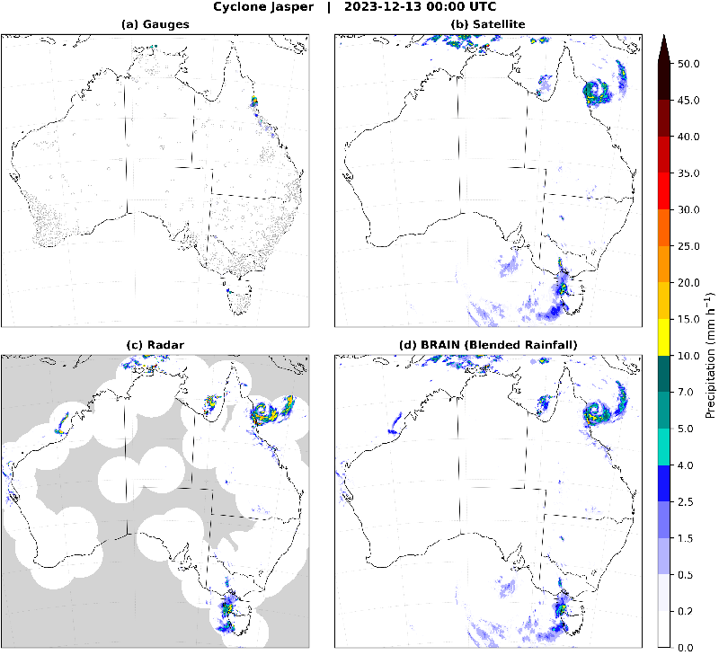
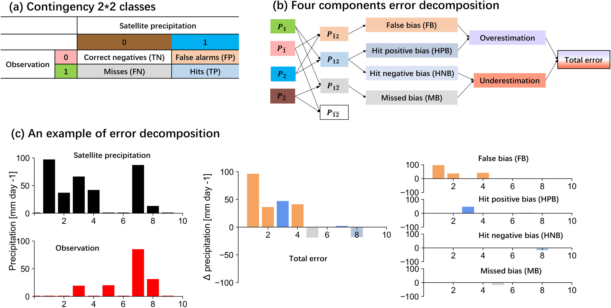
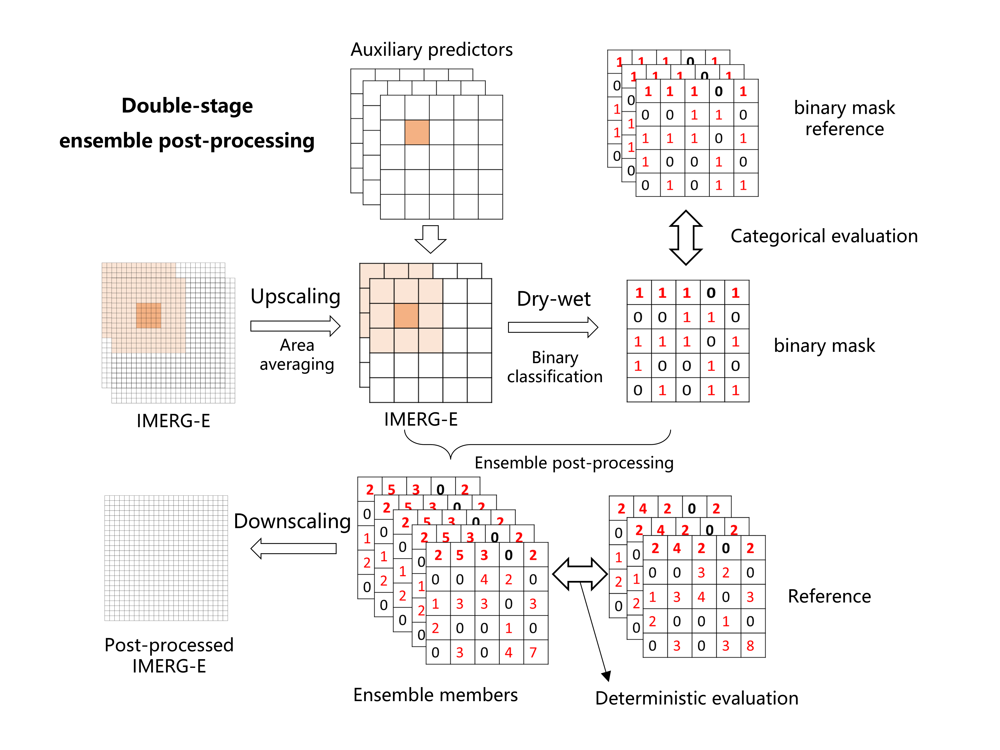
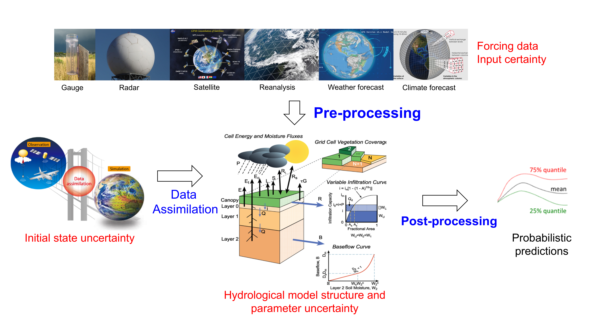

Research
BRAIN (Blended Rainfall)
Developing advanced multi-source precipitation blending methods and operational blended products:
- Selection of different precipitation data sources
- Error characterization and bias correction techniques
- Testing and implementation of state-of-the-art blending algorithms
- Comprehensive evaluation of blended products
- Operational and research application in hydrometeorological fields

4CED (Four-component error decomposition)
Four-component error decomposition method (4CED) that decomposes the total errors of precipitation products into four independent parts: hit positive bias, hit negative bias, false bias, and missed bias.
- Novel error decomposition and analysis methodology
- Systematic characterization of hit positive bias, hit negative bias, missed precipitation, and false alarms
- Quantitative assessment of error sources in precipitation estimates
- Application to global and regional precipitation products evaluation
- Transferability to other hydrometeorological variables

Hydrometeorological post-processing
Post-processing framework for hydrological and meteorological variables:
- Discrete or/and continuous distribution of variables (e.g., precipitation, streamflow, temperature, etc.)
- Classification and regression models
- Bias correction and uncertainty quantification approach
- Feature importance analysis
- Deep learning-based models
Relevant Publications
- Zhang, Y., Ye, A., Li, J., Nguyen, P., Analui, B., Hsu, K., & Sorooshian, S. (2025). Improve streamflow simulations by combining machine learning pre-processing and post-processing. Journal of Hydrology, 132904.
- Zhang, Y., Ye, A., Analui, B., Nguyen, P., Sorooshian, S., Hsu, K., and Wang, Y. (2023). Comparing quantile regression forest and mixture density long short-term memory models for probabilistic post-processing of satellite precipitation-driven streamflow simulations. Hydrology and Earth System Sciences, 27(24), 4529-4550.
- Zhang, Y., Ye, A., Nguyen, P., Analui, B., Sorooshian, S., and Hsu, K. (2022). QRF4P-NRT: Probabilistic Post-Processing of Near-Real-Time Satellite Precipitation Estimates Using Quantile Regression Forests. Water Resources Research, 58(5), e2022WR032117.
- Zhang, Y., and Ye, A. (2021). Machine Learning for Precipitation Forecasts Postprocessing: Multimodel Comparison and Experimental Investigation. Journal of Hydrometeorology, 22(11), 3065-3085.

Hydrological modeling and uncertainty analysis
Hydrological modeling framework for streamflow simulation and forecasting:
- Conceptual and distributed hydrological models
- Data-driven and process-based modeling
- Model calibration and parameter optimization
- Uncertainty quantification and sensitivity analysis
Relevant Publications
- Srikanthan, R., Wang, Q. J., & Zhang, Y. (2025). Use of regional sensitivity analysis for diagnosing parsimony of models: A water model case study. Environmental Modelling and Software, 195, 106727.
- Chen, X., Zhang, Y.*, Ye, A., Li, J., Hsu, K., and Sorooshian, S. (2025). Fine-tuning long short-term memory models for seamless transition in hydrological modelling: From pre-training to post-application. Environmental Modelling and Software, 106350.
- Zhang, Y., Ye, A., Nguyen, P., Analui, B., Sorooshian, S., and Hsu, K. (2021). Error Characteristics and Scale Dependence of Current Satellite Precipitation Estimates Products in Hydrological Modeling. Remote Sensing, 13(16), 3061.
